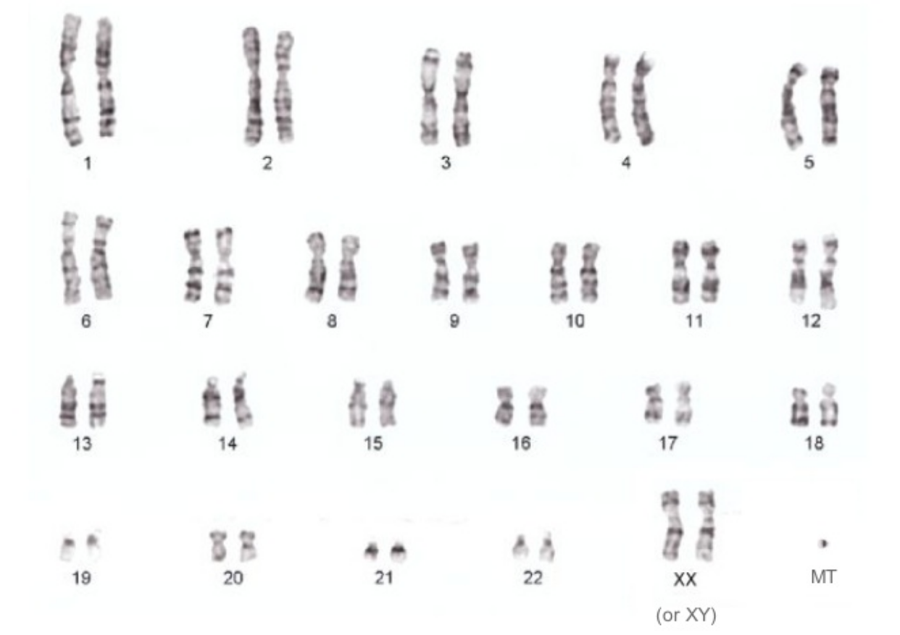
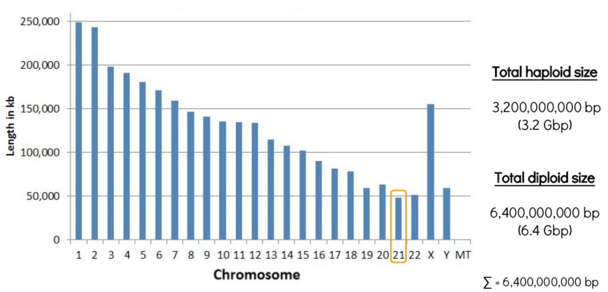
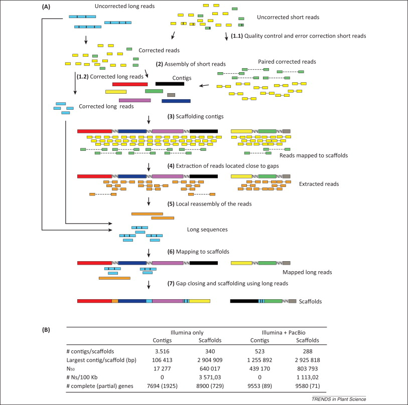

Principles and Applications of Modern DNA Sequencing
EEEB GU4055
Session 11: de novo genome assembly
Today's topics
1. Review notebook assignments: de Bruijn graphs.
2. Discuss the assigned readings: de Bruijn / Euler.
3. Introduce new topic: de novo genome assembly
Notebook 10.1: kmers and de Bruijn graphs
kmers are used to decompose reads into smaller units that align to form a path.

Notebook 10.1: kmers and de Bruijn graphs
Shortest possible superstring that contains all substrings.

Notebook 10.1: kmers and de Bruijn graphs

Session 11: Genome assembly

Session 11: Genome assembly
denovo genome assembly is computationally demanding. Requires reads that cover the full genome many times (e.g., 50X). The end goal is to assemble scaffolds that match to chromosomes -- the real *bits* of the genome.
Session 11: Genome assembly
Even the shortest piece of the human genome is 48Mbp!
Session 11: Genome assembly
Sometimes intermediate/draft genomes are good enough to answer many questions. For many tasks, though, they are not. e.g., genome annotation. Trade off in costs and time.

Session 11: Genome assembly
Hybrid genome assembly methods.

Session 11: Genome assembly
Hybrid genome assembly methods.

Session 11: Genome assembly
Hybrid genome assembly methods.
